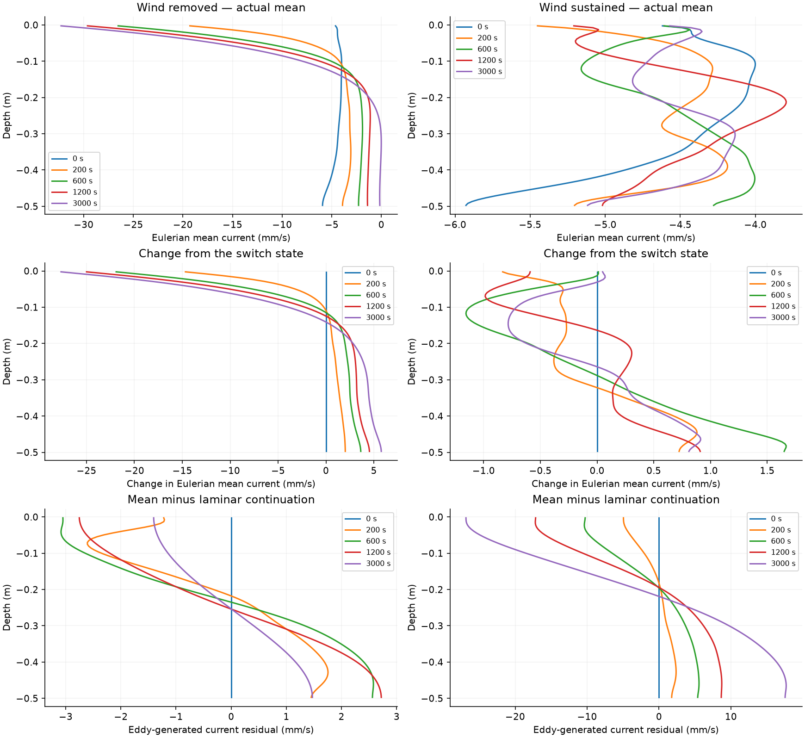
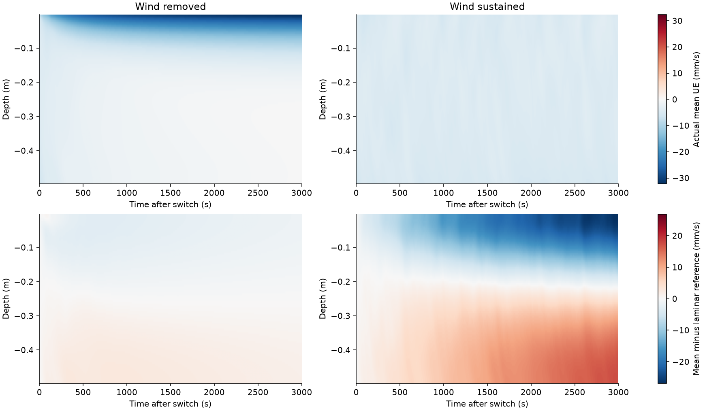
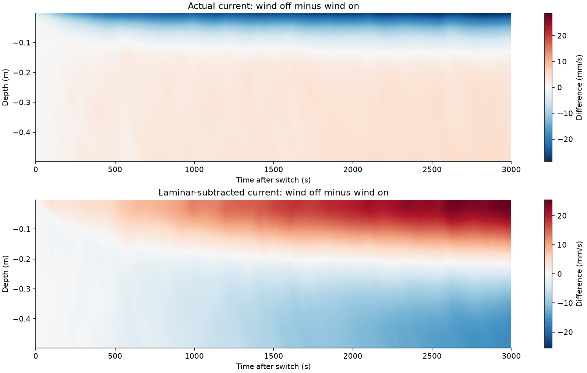
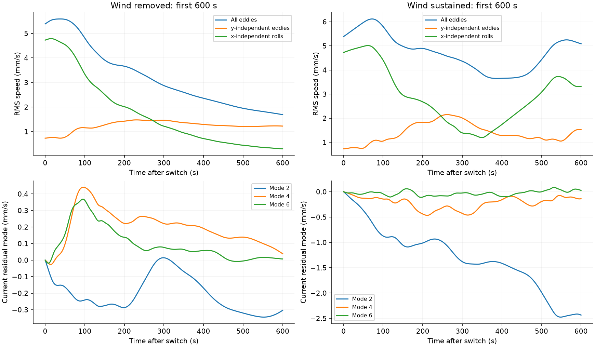
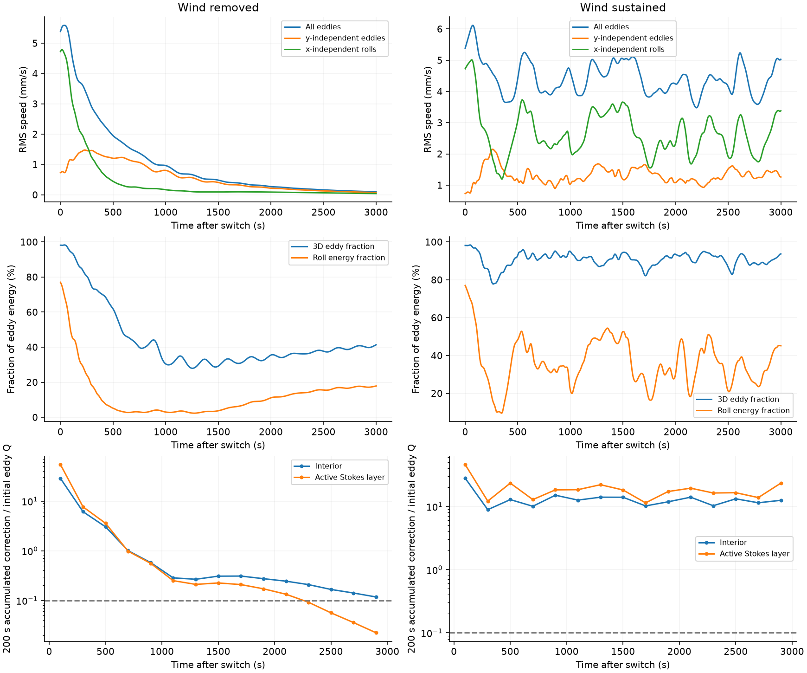
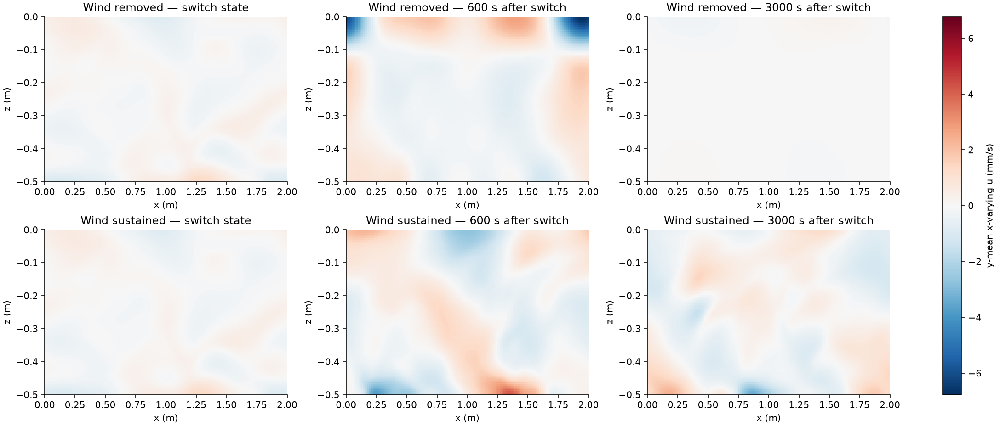

Two three-dimensional branches restart from exactly the same wave-affected turbulent state. One removes the surface stress and its compensating uniform force; the other sustains them. The Stokes drift remains unchanged. This tests the proposed sequence of forced roll production followed by organization during decay.
Selection: the weak-initial-3D, u*=2 mm/s parent at 1000 s contains substantial along-wave rolls and finite x–z eddies. It was selected before running these branches. Inherited structure, viscous relaxation and late loss of turbulent activity are shown explicitly.
Actual parent history before the selected switch. All branches inherit the same native velocity field; post-switch results are separate.

Actual Eulerian mean profiles, their change from the switch, and departure from the same-grid laminar continuation. Elapsed times are measured from the common restart.

Shared color limits within each row. The laminar reference retains the initial current, constant viscosity, and the branch’s surface stress and uniform return force. It contains no turbulent advection.

The direct wind-off minus sustained-wind contrast. Actual difference includes changed stress and viscous response; subtracting each branch’s laminar continuation isolates the remaining mean-current contrast.

Primary first 600 s interval: absolute turbulence and interior-band residual modes. Later evolution is also retained, but viscous decay of narrow bands can obscure an earlier transient.

Absolute motion accompanies energy fractions: a rising 2D fraction can reflect faster decay of 3D motion. Correction ratios use fixed nonoverlapping 200 s windows, normalized by their starting x-varying mean vorticity. Gray crosses flag quiet or unresolved references. Weak source alone is not a verified autonomous forecast.The current residual excludes the laminar background. Mode 1 is broad shear; modes 2–8 carry interior structure. Advective work and viscous damping are integrated from the switch; sign and temporal ordering matter. Sampled-tendency closure: wind-off: full mean budget quadrature 0.0416%, maximum low-mode residual budget 0.0106%; wind-on: full mean budget quadrature 0.000907%, maximum low-mode residual budget 0.00325%. Tendency integration uses the actual saved cadence (1 s in production); initial wall-adjustment quadrature is checked, and an unclosed budget is not evidence of physical production.

Switch, 600 s and final transverse-mean x-varying currents, on one color scale. Horizontally uniform current has been removed from these panels.
What can we conclude?
Both branches are complete and their shared restart is verified. 0 decay windows have small accumulated feedback in both prescribed depth regions. 6 elapsed windows contain persistent extrema that match neither initial nor laminar-reference extrema under the stated positional rule; 1 occur during the primary first 600 s. Late persistence is reported separately. These are unmatched candidates; positional matching cannot rule out drifting inherited features. They are not a mechanism verdict.
A new profile extremum alone is insufficient: inspect growth beyond the laminar continuation, the turbulent momentum work, available eddy energy, and whether 3D feedback weakens before organization. The matched control separates the consequence of wind removal from continued evolution. One realization cannot establish a universal regime boundary, and no binary claim is assigned automatically.

![The current residual excludes the laminar background. Mode 1 is broad shear; modes 2–8 carry interior structure. Advective work and viscous damping are integrated from the switch; sign and temporal ordering matter. Sampled-tendency closure: wind-off: full mean budget quadrature 0.0416%, maximum low-mode residual budget 0.0106%; wind-on: full mean budget quadrature 0.000907%, maximum low-mode residual budget 0.00325%. Tendency integration uses the actual saved cadence (1 s in production); initial wall-adjustment quadrature is checked, and an unclosed budget is not evidence of physical production.](band-budget.png)